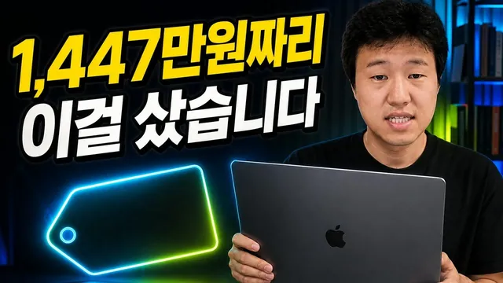

AI 제대로 하려면 맥북부터 사세요

원본 영상 보기 →
- AI 코딩 작업의 병목은 저장장치가 아니라 램이다
- 오케스트레이션 기능이 화려한 툴보다 실제로 쓰는 기능만 있는 쉬운 툴이 낫다
- 원격 제어 편의성이 보안 앱과 충돌할 수 있다
한 줄 요약
유튜버 윤자동이 AI 코딩 작업을 제대로 하려면 왜 맥북이 필요한지, 램 용량별 실제 견적을 보여주고, 이어서 자신이 쓰던 코딩 에이전트 툴 오르카(Orca)에서 최근 나온 신생 툴로 갈아탄 이유를 설명하는 영상.
전체 내용 정리
왜 굳이 맥북이어야 하는가 — 모델별 용도 구분
맥북 라인업 중 가장 낮은 모델은 코딩용 AI를 돌리기엔 적합하지 않고, 중고생이나 대학생이 학교 인터넷 강의를 듣는 정도의 용도에 맞는다고 설명한다. AI 코딩 작업을 하려면 최소한 맥북 에어 정도는 써야 한다고 권한다.
저장장치보다 램이 훨씬 중요하다
크기는 13형과 15형 중 취향껏 고르면 되지만(비용을 아끼려면 13형), 정작 중요한 건 램이라고 강조한다. 16GB로도 작동은 되고 윈도우보다 빠르지만, 그래도 24GB나 32GB 정도를 추천하며 이 경우 가격이 60만 원가량 더 붙는다고 밝힌다. 반대로 저장 용량은 좀 낮아도 크게 무리가 없는데, 구글 드라이브·원드라이브·아이클라우드 같은 클라우드 서비스에 데이터를 넣어두고 필요할 때 받으면 되기 때문이라고 설명한다. 이런 조합(에어, 32GB 램)으로 애플케어를 뺀 가격이 317만 원 정도라고 밝힌다.
맥북 프로 견적과 본인이 실제로 산 최고 사양
성능을 더 높이고 싶다면 맥북 프로를 권하며, 14형과 16형 중 저렴하게 가려면 14형이 낫고 16형은 크기가 큰 대신 가격이 170만 원 이상 더 붙어 500만~600만 원대로 올라간다고 설명한다. 기본 칩에 램 32GB, 저장 1TB 조합이면 애플케어 없이 397만 원 정도가 나온다고 밝힌다. 본인이 실제로 쓰는 사양은 M5 맥스 칩에 40코어, 램 128GB, 저장 4TB(원래는 8TB를 사고 싶었지만 품절이었다고 함) 구성으로, 이 사양의 가격이 1447만 원이라고 밝힌다. 8TB까지 선택하면 가격이 1800만 원 가까이 되는데, 본인은 가격 인상 전에 4TB 구성을 약 1000만 원 정도에 구매했다고 언급하며, 이후 가격이 거의 50% 가까이 올라 지금은 그 가격에 살 수 없을 것 같다고 덧붙인다.
예산이 부족하면 맥미니도 대안이 된다
맥미니도 요즘 많이 쓰인다며 소개한다. M4 기본형(16GB, 256GB) 구성이 134만 9000원 정도이고, 당근마켓 같은 중고 거래로는 100만~110만 원 선에 구할 수 있다고 안내한다.
코딩 에이전트 툴 — 오르카에서 신생 툴로 갈아탄 이유
최근까지 오르카(Orca)라는 무료 코딩 에이전트 툴을 잘 써왔다고 소개한다. 여러 워크트리를 만들어 여러 AI에게 같은 작업을 동시에 시키고 그중 가장 좋은 결과물을 고를 수 있는 오케스트레이션 기능, 모바일 연결 기능을 갖췄고 깃허브 스타도 33만 8000개에 달한다고 설명한다. 다만 단점으로, 실행하면 터미널(CLI 환경)로 열려서 개발자에게는 익숙해도 그렇게 부드러운 사용감은 아니라고 지적한다. 그런데 2~3일 전 새로 출시된 경쟁 툴(정확한 한글 표기가 파서·파세오·빠세오 등으로 엇갈리는 신생 툴)을 써보고는 오르카보다 낫다고 느껴 소개하고 싶었다며, 광고가 아닌 무료 서비스라는 점을 밝힌다.
새 툴로 갈아탄 두 가지 이유 — GUI와 원격 제어 편의성
첫 번째 이유는 UI가 GUI 형태로 되어 있어 훨씬 쓰기 편하다는 점이다. 두 번째, 더 큰 이유는 외부에서 모바일로 원격 제어할 때의 차이다. 오르카도 모바일 제어를 지원하지만 같은 네트워크에 있어야만 가능해서, 집 밖에 나가면 네트워크가 달라져 기본적으로 제어가 안 된다. 이를 해결하려면 테일스케일(Tailscale)이라는 VPN 서비스를 PC와 핸드폰 양쪽에 설치하고 같은 계정으로 로그인해 서로 같은 네트워크에 있는 것처럼 인식시켜야 했다. 문제는 핸드폰에 이 VPN 앱을 설치해두면 일부 금융 앱이 이를 해킹 의도가 있는 불법 프로그램처럼 탐지해서, 은행 앱과 삼성페이 사용이 막혔다는 점이다. 그래서 삼성페이로 결제하려면 매번 테일스케일을 껐다가 다시 켜야 하는 불편을 감수해왔다고 밝힌다. 반면 새 툴은 이런 별도 VPN 앱 없이 QR코드로 기기를 페어링하는 것만으로 바로 모바일 연결이 가능했다고 설명한다.
오케스트레이션 기능은 오르카가 더 많지만, 초보자에겐 새 툴을 추천
오르카가 오케스트레이션 기능은 더 화려하게 갖췄지만, 진짜 개발자가 아니고서는 이런 다중 에이전트·다중 워크트리 기능을 거의 쓰지 않을 거라고 짚는다. 그래서 그런 고급 기능을 크게 활용하지 않을 사람이라면 새 툴이 훨씬 쉽게 쓸 수 있어 초보자에게 강력 추천한다고 말한다. 이 새 툴은 클로드 코드에 바로 물어보거나 구글에서 검색해 다운로드할 수 있고, 클로드 코드·코덱스·코파일럿 등과 연동되며 모바일 앱도 있다고 안내하며 영상을 마무리한다.
핵심 인사이트
- AI 코딩 작업의 병목은 저장장치가 아니라 램이다: 저장 용량은 클라우드 서비스로 어느 정도 보완할 수 있지만 램은 대체할 수 없어서, 예산이 한정적이면 저장장치를 줄이고 램에 투자하는 게 합리적이라고 강조한다.
- 오케스트레이션 기능이 화려한 툴보다 실제로 쓰는 기능만 있는 쉬운 툴이 낫다: 오르카의 다중 에이전트·다중 워크트리 기능은 개발자가 아니면 거의 쓰지 않게 되므로, 비개발자에게는 GUI 기반의 단순한 툴이 실사용성이 더 높다.
- 원격 제어 편의성이 보안 앱과 충돌할 수 있다: 원격 제어용 VPN이 은행·페이 앱의 보안 탐지에 걸려 매번 껐다 켜야 하는 불편이 있었는데, 새 툴은 VPN 없는 페어링 방식으로 이 문제를 해결했다.
오늘 당장 해볼 것
- 새 업무용 노트북을 알아보고 있다면 저장 용량보다 램(메모리) 사양부터 확인하고, 예산이 부족하면 저장장치를 줄이는 쪽으로 우선순위를 조정해본다.
- 지금 쓰는 AI 자동화 툴에서 실제로 쓰지 않는 고급 오케스트레이션 기능이 얼마나 되는지 점검하고, 더 단순한 대안이 있는지 비교해본다.
- 원격으로 컴퓨터나 업무 툴을 제어할 때 VPN 앱을 쓰고 있다면 결제·금융 앱과 충돌하는지 확인하고, QR코드 페어링처럼 VPN 없는 대안이 있는지 찾아본다.